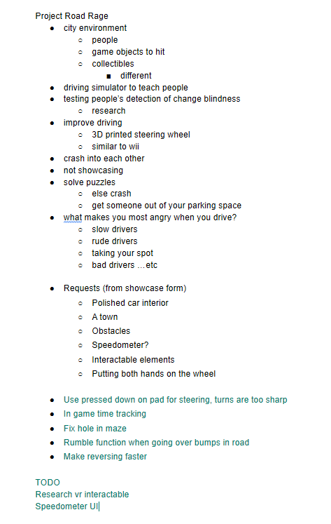
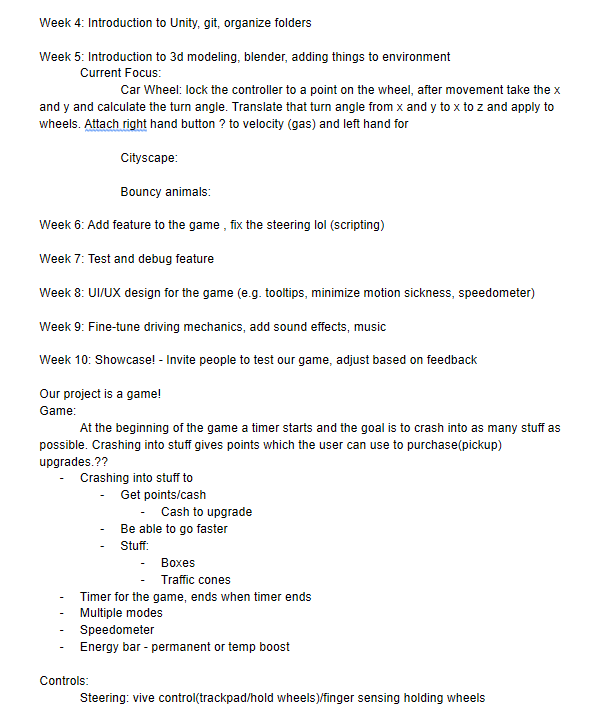
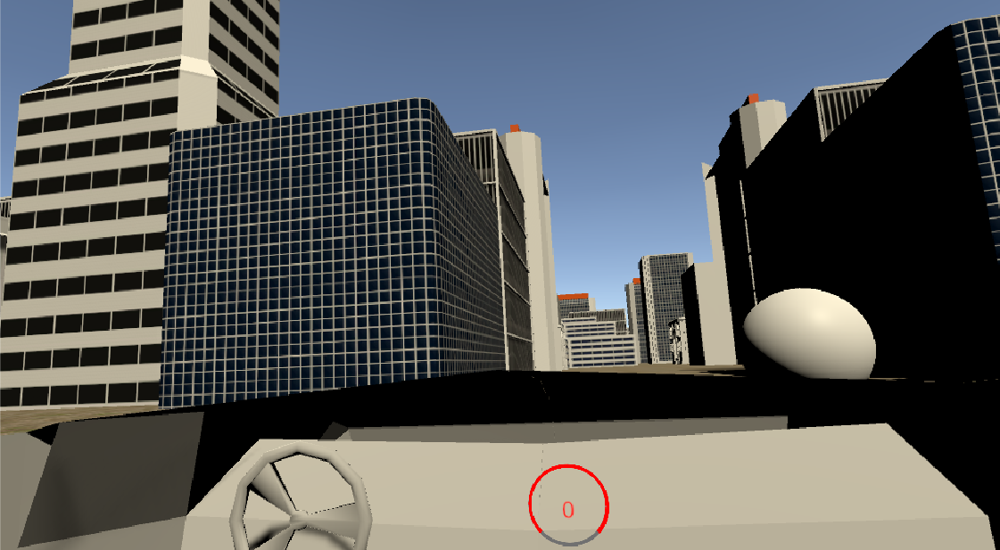
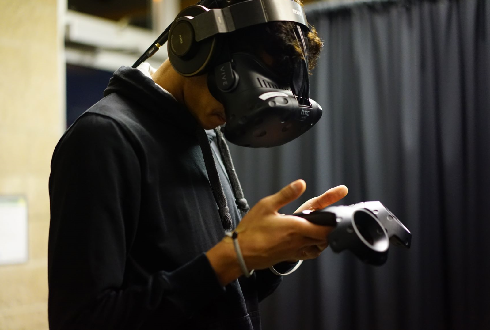
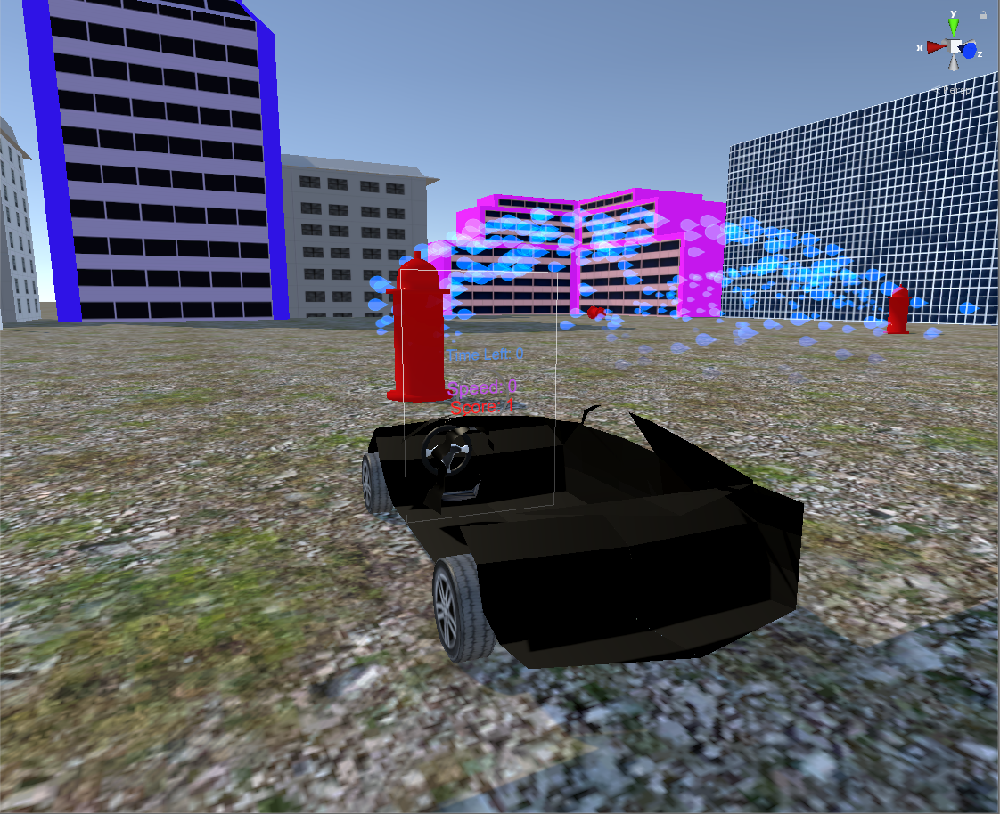
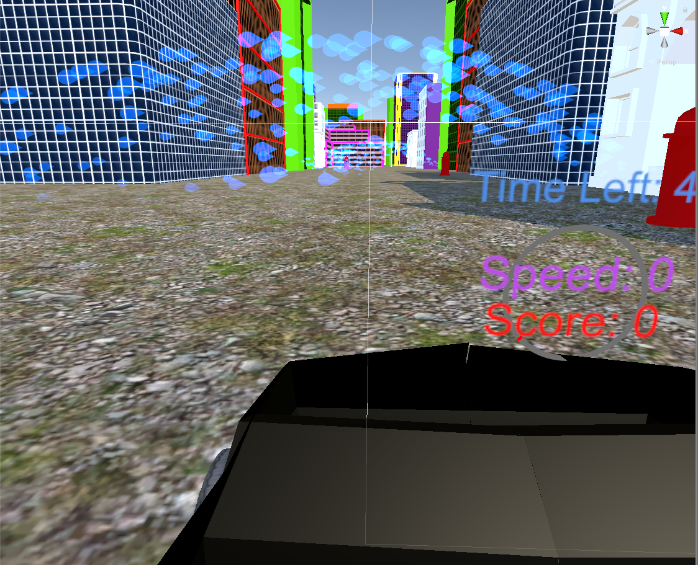
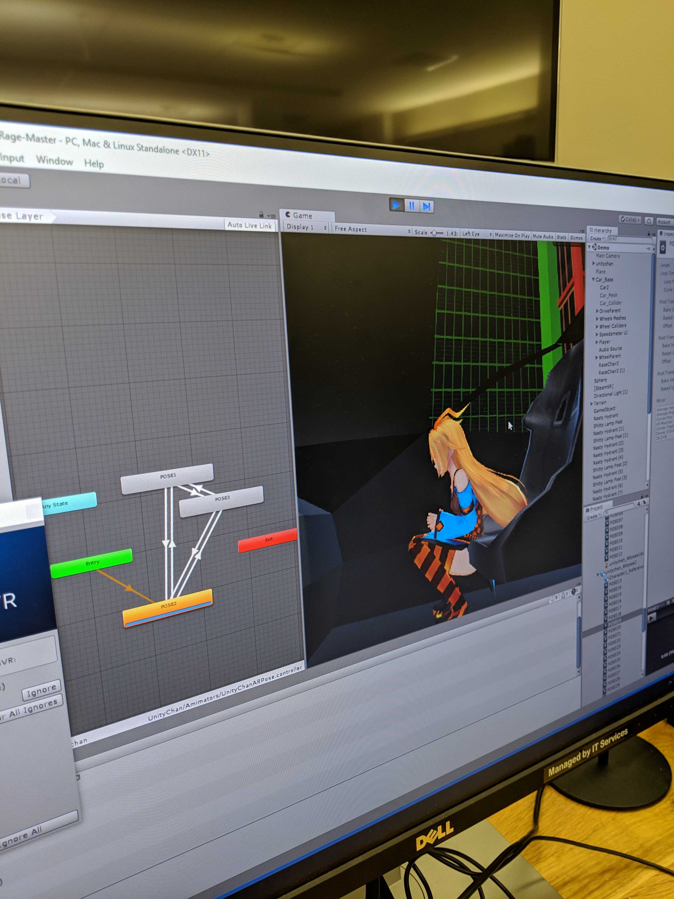

Project Road Rage is a game that simulates driving in a busy city. Players will encounter obstacles as they drive around the street in our VR city environment, and they can respond by avoiding, honking, or crashing into things to earn points within a time limit. The user can turn the steering wheel left and right and step on the brake, just like in a real car. The game is designed to be loud, fun, and stress-relieving by simulating what would happen if you let your anger out on the street.
This project was developed over 2 years in a team of 5, with new team members being swapped in the second year. Once a week, we would hold a team meeting to discuss new ideas, work together to implement cool features, and have fun testing our code in a virtual universe. We chose to do this project because as young adults who were familiar with the road, we were inspired by our daily struggle with traffic and the frustration we felt while driving. Thus, the game allows players to channel those frustrations into a game where the more annoyed they get, the more points they want to achieve. Twice a year, we had showcases that allowed other UCSD students to experience blissful road rage.
Role: During the first year of the project, I learned how to use Blender to create an intricate 3D car that we could import into Unity as well as how to program in C# to make the car turn and go forward. In the second year, I became co-lead of the project and continued to program and debug the steering and movement of the car while offering advice and guidance to new members.
Languages/Tools: C#, Unity, Blender, HTC Vive Headset and Controllers, Nintendo Switch Joycons

Frustrated drivers need a way to relieve their stress and anger on the road without having to deal with real life consequences.
For a driver, sometimes being on the road is frustrating when there is too much traffic or when someone else cuts you off. Because of this, we found that there was a need to release driving-related anger without causing damage to other objects or people. When I asked other people what they usually did when driving in these situations, they responded that they turned on the radio, honked at the driver, or tried to calm down by letting it go. However, these tactics may not be the most effective, so we tried to implement a game that would alleviate some of their anger for when they tried driving again in the future. In addition, for those who are learning how to drive but didn't have a car or a driving instructor, Road Rage could be an opportunity that allows users to get a feel for the driving basics. We recreate the feel of a real car by having users sit down, place their foot on our cardboard foot pedal, and grab on to the virtual steering wheel.
We spent the first few weeks as a team planning out what we wanted to include in our game, how we were going to implement certain features, what tools we needed, and different tasks that needed to be done. This included what type of objects the player could hit, what our project set out to accomplish, motivations, and driving improvements that could be made. Each person was responsible for coming to team meetings, contributing their thoughts, and learning how to use Unity or Blender. After learning how to use our tools, our general flow was to have a possible feature, code that feature, debug it, and make sure it worked before moving on to the next thing. Our most important task was to ensure that the driving was smooth and did not cause the player to be nauseous. After the main functionality was completed, we could worry about other things such as sound effects, adding more color, and creating more objects to crash into. The pictures below show a more detailed account of our collective brainstorming.
 For our initial prototype, our main goal was to use our understanding of Unity and Blender to create a basic working car in a simple environment. The buildings were models that were imported from the assets store in Unity and the spheres we ran into were default objects, but the car and wheel I modeled myself in Blender. In order to make the car steer, we used the track pads on the HTC Vive Controllers to sense the position of our thumb. Wherever the thumb was on the trackpad, the car's tires would face the direction of the thumb. With a bit of physics and math, we made the car accelerate by pressing and holding the trigger button on the back of the controller. To make the car stop completely, the user would have to press a button on the side of the controller, which would rapidly decelerate the car. We also added a speedometer to the right of the wheel so the player could see how fast they were going. As of this point, the player could go backwards and forwards, turn the car and brake, and drive around the city while crashing into spheres.
Caption: Our initial prototype of a car in the city
During our showcases with our polished prototype, we had students from UCSD try out our game and give us feedback on their driving experience. Before each demo, we had to verbally explain what the controls were so they could correctly move where they wanted to go. Their task was to go through a city maze and find the exit, which required great control over the mobility of the car. In later showcases, players could also crash into objects to score points. However, we noticed that many users would have to be told the controls multiple times in order to progress through the maze. Specifically, some users spent a lot of time figuring out how to go backwards after crashing into a building because they had to think about which button mapped to what function. Others said that they were quite nauseous after playing the game and said the steering was not steady enough or too sensitive with the thumb input. From these comments, we knew we had to change how players could control the car. In general, our users struggled to remember which buttons did what, which made the game less fun than it could have been. The nausea was also caused by a disconnect between button presses and what they expected to happen. There were too many buttons on the controller to keep track of and we wanted to make the experience more realistic. Our next iteration would use less buttons and have players intuitively grab onto a wheel to steer instead.
Caption: This user is trying to figure out the controls of the car
 Caption: Views of the road and city from the player's perspective
Our previous research had shown that our controls were too confusing and needed to be changed. After another brainstorming session, we decided to move the steering function onto the virtual steering wheel and added a foot pedal that players could physically step on to accelerate the car using Nintendo joycons. The only button that needed to be pressed was the trigger button and the trackpad, which made it much more simple to play. In order to detect if the steering wheel was grabbed, we had to check that the virtual controller was colliding with the virtual wheel and that the trigger button was pressed. Holding down the trigger button while colliding with the wheel allowed the user to move the wheel left and right to turn the tires of the car. To go forward, the player would step on the foot pedal which would cause a change in the position of the joycons and signal an increase in acceleration. To imitate switching gears in a real car, if the player wanted to change between going forwards and backwards, they would press above and below the center of the trackpad, respectively. Our alternate design showed much improvement in later showcases and less users reported being nauseous. Moreover, they were feeling much better about the steering now that they had a wheel to grab onto.
Caption: Calibrating joycon movement with Unity (left), Setting animations for our passenger (right)
Caption: Taking our passenger for a ride (left), Testing the joycon with our foot pedal (right)
Our final showcase included an improved car model and wheel, a proper race track with objects to crash into, and a friendly passenger that reacted to crashes. With smoother steering, players were motivated to crash into everything they could and we could see the smile on their face when they did. Our team worked hard for 2 years on this project, but we also had a blast testing our game and sharing it with other people.